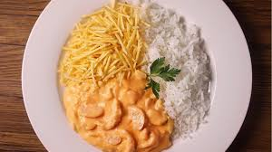

Prato pronto:


Estrogonofe é um prato originário da culinária russa composto de cubos de carne bovina servidos num molho de creme de leite. Desde sua origem no século XIX, o prato popularizou-se em muitos países europeus, norte-americanos e no Brasil, sempre com variações consideráveis da receita original.
Lasanha é tanto um tipo de massa alimentícia formada por fitas largas, como também um prato, por vezes chamado lasanha ao forno. Feito com essas fitas colocadas em camadas, e entremeadas com recheio e molho.